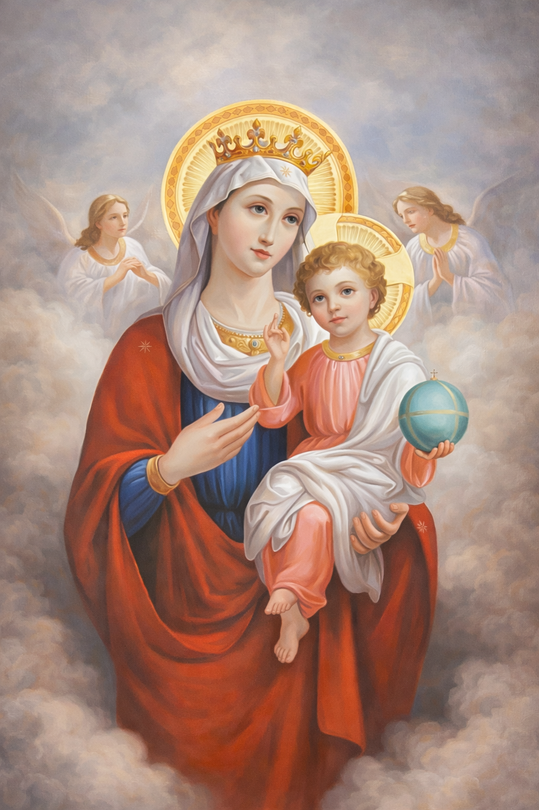

Theotokos
Proclaimed at the Council of Ephesus in 431 AD, affirming that she gave birth to God incarnate.
Our Patron Saint
Patron Saint of St. Mary Coptic Orthodox Church

Who Is St. Mary the Theotokos?
Hail to you, O full of grace, the Lord is with you.
Luke 1:28
St. Mary, the Theotokos, is the most honored saint in the Coptic Orthodox Church and throughout Christianity. The Greek title Theotokos means “God-bearer” or “Mother of God,” confessing that the child born of her is truly God incarnate.
She is the chosen vessel through whom God became man, the ever-virgin, the intercessor, and a spiritual mother to all believers.
Her Titles
Proclaimed at the Council of Ephesus in 431 AD, affirming that she gave birth to God incarnate.
She remained a virgin before, during, and after the birth of Christ.
She bore the Lord of Glory within her womb.
Like the bush that burned without being consumed, she carried God without losing her virginity.
As sung in the hymn Ti Shori, her womb bore the divine fire.
Honored daily in the prayers of the Church as the true Queen and Mother of Light.
She united heaven and earth by bringing forth the Savior.
Her Life
Born to Joachim and Anna, St. Mary was consecrated to the Temple at a young age. The Archangel Gabriel appeared to her and announced that she would conceive by the Holy Spirit. Her humble response, “Behold the maidservant of the Lord,” remains a model of obedience and faith.
She gave birth to Christ in Bethlehem, raised Him with care and devotion, and stood faithfully at the foot of the Cross. After His Ascension, she remained with the Apostles in prayer and witnessed the descent of the Holy Spirit at Pentecost.
In Our Liturgy & Hymns
This is the censer of pure gold, bearing the blessed and live coal, Who is the Lamb of God, Who takes away the sin of the world.
Ti Shori, Hymn of the Censer
Iconography
The icon of St. Mary and the Child Christ is placed to the left of the altar in every Coptic church. She is shown as humble, motherly, and crowned with glory, always pointing us toward her Son.
Her Intercession
We do not worship St. Mary. Worship belongs to God alone. We venerate her and ask for her prayers, just as the wedding guests at Cana brought their need to her. She intercedes powerfully for us before the throne of her Son.
Since we have no favor, no excuse, nor justification because of our many sins, we through you implore to Him Who was born of you, O Theotokos the Virgin.
Liturgy of St. Cyril
Liturgical Celebrations
August 7 to 22, ending with her Dormition. It is a season of reverence, prayer, and joy.
March 25, celebrating the Archangel Gabriel's message to the Virgin Mary.
August 22, commemorating her departure from earthly life.
Her Example for Us
St. Mary is a model of humility, purity, obedience, and unwavering faith. Her life teaches us to magnify the Lord with our souls and to submit to His will joyfully. She is truly the Mother of Light, leading us always to her Son.
May the intercessions of the Ever-Virgin St. Mary the Theotokos be with us all. Amen.
English Hymns Honoring St. Mary
From now on all generations will call me blessed.
Luke 1:48

A joyful hymn proclaiming the glory of the Theotokos, praising her as the one who bore the true Light.
A hymn asking for the prayers of the Virgin Mary and calling on her compassionate intercession for our salvation.
Hymns glorifying St. Mary for her purity, humility, and role in God's plan of salvation.
A veneration hymn sung in liturgical settings and processions, calling on the Virgin with many beautiful titles.
A contemporary Coptic hymn celebrating St. Mary's love and sacrifice as the Mother of God.
Explore more English and Coptic hymns honoring St. Mary.